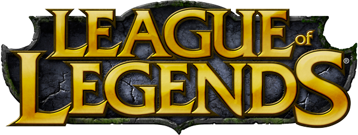

Één van deze makers van deze website is René Crooswijk, maar wie is hij precies?
Identiteit
René Crooswijk is 16 jaar oud en geboren op 4 mei 2006.
René woont tot nu toe in Rozenburg.
Dat is 20 minuten reizen naar zijn school.
Wat vind René leuk om te doen?
René houd van gamen en programmeren. Hij vind het leuk om anime te kijken en naar concerts en conventies te gaan.
De games die René echt leuk vind om te spelen zijn CSGO, League of Legends en Osu!
Hij houdt ervan om naar J-Pop en J-Rock te luisteren. (Japanse Muziek).
René vind programmmeren leuk en hij is van plan om zich verder te richten in programmeren.
Heeft René huisdieren?
René heeft inderdaad huisdieren. Hij heeft in totaal 5 huisdieren.
Twee katten, twee konijnen en één cavia.
